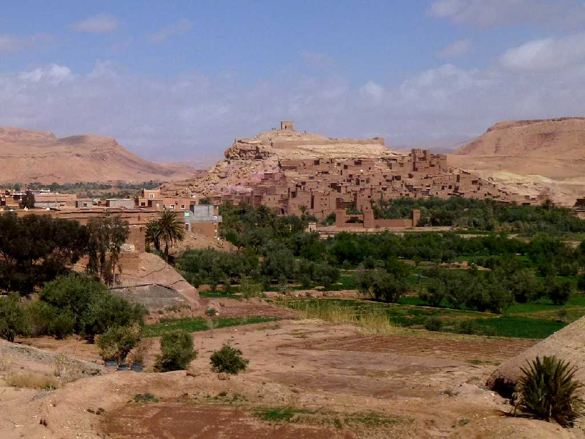
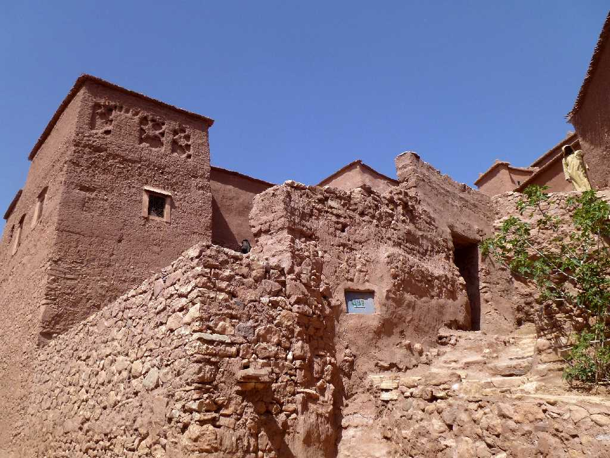
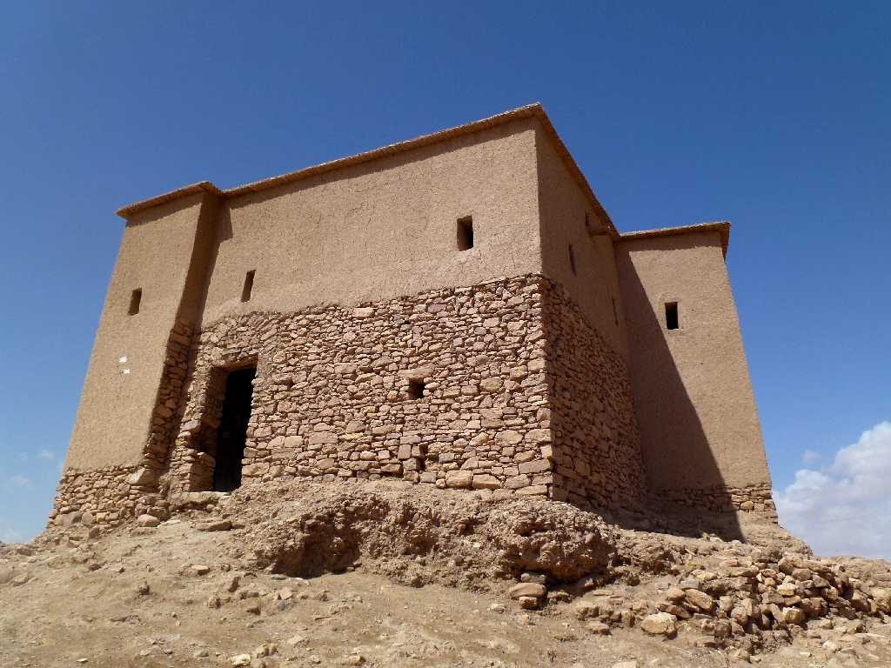
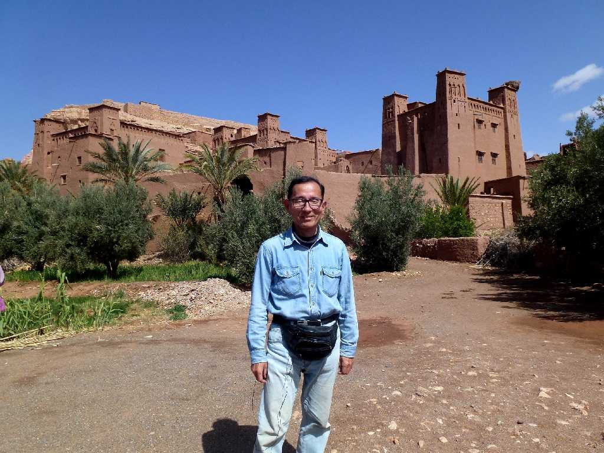

Ait Ben Haddou
ハドゥ族の要塞村カスバであるアイットベンハドゥは１,０００余りあるカスバのうち最も美しいカスバの一つと云われている

ベルベル人がアラブ人の支配を逃れ造られた厚さ５０ｃｍ程の日干し煉瓦のカスバで最盛期は６００人余りが住んでいたが今も電気水道等が無く５０人余りが暮らしている

Granary Ait Ben Haddou
篭城に備えた穀物庫

March 14 2014 Ait Ben Haddou